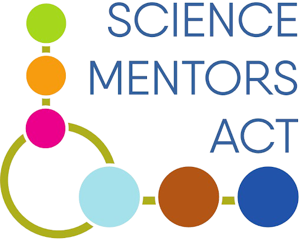

PART
Telescopes
Designing low-cost radio telescopes and open software to bring astronomy within reach of rural schools.
Instructions
Access setup guides and project resources through the documentation menu. We recommend starting with installation instructions, then following the software workflow for recording and processing data from RTL-SDR devices.
About Us
Our names are Narayan Dwan-Holland, Aliana He, Kevin Fang, Emma Enyu Zhang and Yanfu Fan.
As students from Narrabundah College, ACT, and participants of the Science Mentors ACT program, the Project for Accessible Radio Telescopes (PART) is our initiative aimed at designing, manufacturing and distributing telescopes for rural educators and students to support their study of astronomy.
We aim to produce a simple but reliable telescope design with a total production and assembly cost under $500.00, capable of recording signals at the 21 cm line, an important frequency band associated with galactic hydrogen. Our design consists of a commercially available weather satellite dish and a conductive plastic base to collect signal, alongside a signal processing system with low-noise amplifiers, bandpass filters, a software-defined radio and a motor system.
We seek to manufacture 25 such telescopes to distribute freely among rural high schools and colleges. Due to monetary and accessibility constraints, many rural Australian schools are unable to afford telescopes and are limited in their study of the universe. We aim to empower affected students and educators by providing the equipment and knowledge needed to engage in astronomy.
In doing so, we hope to address the contrast in education between urban and rural Australian settings. According to a 2023 report by the Department of Education, the average 15-year-old in remote Australia is 1.5 years behind metropolitan students in STEM subjects. We aim to combat this by increasing access to accurate scientific instruments and enabling higher quality contributions to astronomical research.
Proudly Supported By

Science Mentors ACT

Narrabundah College